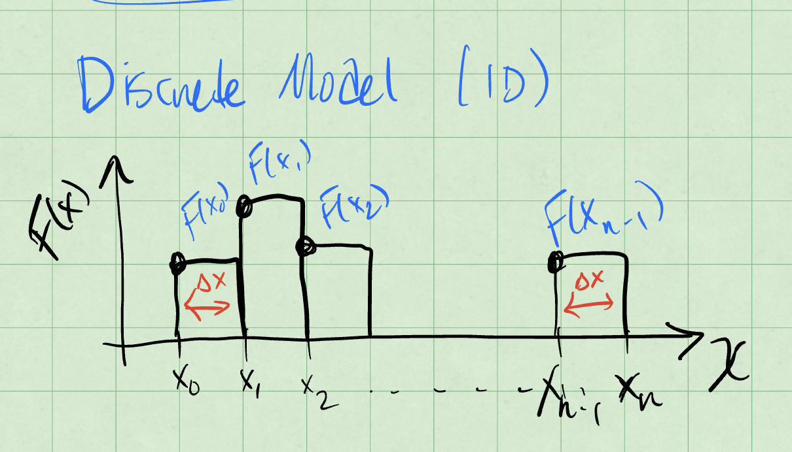
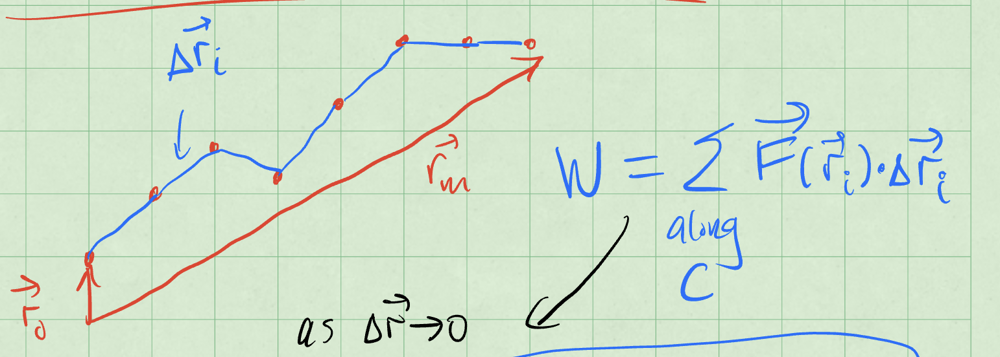
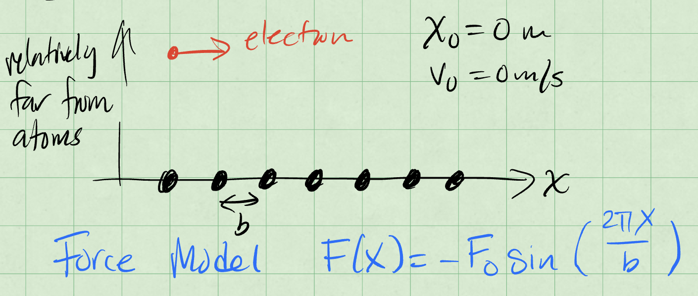
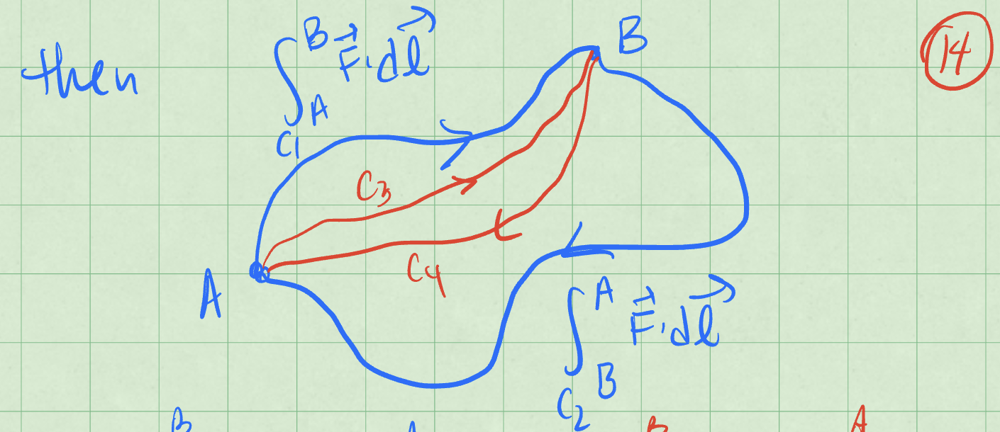

Week 5 - Notes: Conservation of Energy#
One expression of a conservation law is the conservation of energy. For an isolated and closed system, the total energy is conserved. That is, before and after any process, we can account for all the energy in the system and it is the same. More generally, conservation of energy accounts for the energy “lost” to the surroundings. All of the changes to the system must be accounted for in changes the surroundings.
For a given choice of system that interacts with its surroundings, the change in energy of the system is equal to the work done on the system and any heat exchanged with the surroundings. This is a statement of the first law of thermodynamics. We can write that statement mathematically as:
where \(\Delta E_{\text{system}}\) is the change in energy of the system, \(W\) is the work done on the system, and \(Q\) is the heat exchanged with the surroundings.
Sign conventions
Note that the signs of the work done and heat exchanged are important. But we can remember them by asking if the system is going to increase its energy.
If we add energy into the system by heating it, then \(Q\) is positive because \(\Delta E_{\text{system}}\) is positive. If the remove energy from the system through an exchange of heat, then \(Q\) is negative.
If the system does work on the surroundings, for example, by exerting a force on an external object over some displacement, then \(W\) is negative because \(\Delta E_{\text{system}}\) is negative. If instead the surroundings do work on the system, then \(W\) is positive.
We can rewrite this energy equation as an update equation for the energy of the system:
From this equation, we can see that the final state of the system’s energy is determined by the sum of its initial energy, the work done on the system, and the heat exchanged with the surroundings.
The Work-Energy Theorem#
We often model a system as a single object that interacts with its surroundings. In this case, it’s often beneficial to select the object alone to be the system of interest. Then all of our work is to explain and predict the dynamics of the object.
This simplification allows us to employ a more specialized case of the general energy equation. We can write the work-energy theorem as:
where \(\Delta E_{\text{object}}\) is the change in energy of the object and \(W_{\text{net}}\) is the net work done on the object.
More specifically, we often focus only on the changes to the object’s motion. This is because we use often use the model of a point particle to describe the object. In this case, the object has no internal structure and thus no internal energy. The only energy we need to consider is the object’s kinetic energy, \(K\).
Limitation of this model
The point particle model where we focus on the kinetic energy of an object is an obvious simplification. But it might not be so obvious how quickly it is to break down.
Consider pushing a block across the floor. The block is a point particle and we model it as such. It comes to a stop and we argue the block’s kinetic energy was converted to heat in the floor.
But what about the block itself? Would it’s surface temperature increase? It does, but we don’t account for it.
A great account of these kinds of situations is from my colleague Bruce Sherwood. Bruce’s paper, Pseudowork and real work, American Journal of Physics (1982), is an important read about the limitation of the point particle model. You can find a PDF copy here.
Kinetic Energy#
Our model of kinetic energy stems from a series of experiments dropping stones into clay. The depth of the hole made was proportional to the square of the impact speed.
Through many additional experiments we have quantified the kinetic energy of a point particle as:
We also use \(T\) to represent kinetic energy, so you might see it written as:
Note that this description of the kinetic energy is fully classical. It is the energy of motion in the limit that object moves much slower than the speed of light. We learned from Einstein’s special theory of relativity that the total energy of an point particle is:
where \(\gamma\) is the Lorentz factor and \(c\) is the speed of light. The Lorentz factor is defined as:
Notice that if \(v/c =0\) then,
We call this the “rest energy” of the object. It is the energy of the object when it is not moving, and it demonstrates the mass-energy equivalence.
The remaining energy of the object is the kinetic energy, \(T\). We can write that as:
We can take the limit that \(v/c \ll 1\) and expand the Lorentz factor in a Taylor series to find that:
Then we find that the kinetic energy is:
We have recovered the classical expression for kinetic energy. The higher order terms in the expansion are negligible when \(v/c \ll 1\).
Developing the Work-Energy Theorem#
Let’s start with our definition of the classical kinetic energy of a point particle:
We ask how does \(T\) change with time? We take the time derivative of \(T\):
The last term can be combined because the dot product is commutative. We can factor out the \(m/2\) and write:
Ok, in that expression is the net force on the object,
So that,
Now let’s discretize the time derivative to make sense of this.
That last term is the displacement of the object, \(\Delta \vec{x} = \vec{v}\Delta t\). So we can write:
This is the work done on the object by the net force. We can write that as:
Overall Effect of the Forces#
Consider that we are looking at the changes in the object’s motion over a longer period of space and time. This discrete model above helps us understand the relationship between the work done on the object and the change in its kinetic energy in a small interval, but what about the overall effect of the forces on the object?
Consider a discrete set of \(n\) spatial intervals, \(\Delta x_i\), where \(i\) is the index of the interval.
At each of these spatial intervals, we experience a different net force, like in the figure below.

The work done by this force is the change in kinetic energy of the object:
Notice that in the limit that \(n \rightarrow \infty\) and \(\Delta x_i \rightarrow 0\), we have a continuous function of the net force. We can write that as:
Thus, in our continuous limit, we can write the work done by the net force as:
What about in more than one dimension?
Work done in more than one dimension#
Consider a path \(C\) that we have discretized into \(n\) intervals. The object starts at \(\vec{r}_0\) and ends at \(\vec{r}_n\). Each interval is \(\Delta \vec{r}_i\) and the net force is \(\vec{F}_{net,i}\). The figure below shows the work done by the net force in each interval.

The work done by the net force is:
as \(\Delta \vec{r}_i \rightarrow 0\) and \(n \rightarrow \infty\), we have a continuous function of the net force. We can write that as:
The work can be positive, if the force and displacement are in the same direction, or negative, if they are in opposite directions. It can also be zero, if the force is perpendicular to the displacement.
If the force is always perpendicular to the displacement, then the work done by the force is zero. This is because the dot product of two perpendicular vectors is zero. But what kind of motion is possible?
Example: The Simple Harmonic Oscillator#
Consider, again, the humble SHO. If we have a horizontal spring mass system, we know we can write the force on the mass as:
Let’s allow the spring to move from \(x_i\) to \(x_f\), while the speed changes from \(v_i\) to \(v_f\).
The change in kinetic energy is:
The work done by the spring is:
Or more simply,
The Work-Energy Theorem tells us that:
We can rearrange this to find the relationship between the states before and after the motion:
The first term on the left and right side are the energy due to motion. The second terms are some other energy, but taken together before and after the motion, they are the same. They are a constant. This is a conserved quantity.
We call the second quantity the potential energy of the spring-mass system. It is the energy of the system due to its position, or it’s “configuration”. We define the potential energy of the spring as:
We often use \(V\) to represent potential energy, so you might see it written as:
What we have discovered is that the total energy of the spring-mass system is:
You have likely seen this previously in your study of the SHO. It is a very important result. But it is also the case that we don’t always have a potential energy function.
We need to have a conservative force to have a potential energy function. A conservative force is one where the work done by the force is independent of the path taken. Above, we assumed that in our calculations because the force was only dependent on the position of the object. That is a key feature of a conservative force.
Example: A Lattice Chain#
A less obivous example that produces a potential energy function is a lattice chain. Here we model an electron moving in 1D near but not too near a long chain of atoms. The picture below shows the model.

Here the location of the particle and it’s initial velocty are zero. The force model for a chain of atoms in this arrangement is:
where \(b\) is the spacing between the atoms and \(F_0\) is a constant.
We can again find the kinetic energy change and work done by the force:
Using the Work-Energy Theorem, we can write:
Thus, we can find the speed of the object at a given position:
But more importantly, we can derive a potential energy function for the lattice chain. We can write:
where \(C\) is a constant. We can choose \(C\) so that \(U(0) = 0\); only the difference in potential energy matter. Then we have:
This is just another conservative force.
Conservative Forces#
These forces occur frequently enough in physics and their properties are so important that they deserve their own attention. There are a few key properties of conservative forces that we should note:
if the work is independent of the path taken, then the force is conservative.
if the work done by the force is zero for a closed path, then the force is conservative.
if the curl of the force is zero, then the force is conservative.
It turns out that all of these statements are equivalent. And if any one of them is true, the rest hold, and we can develop a potential energy function for the force.
Why do these imply each other?#
Let’s start with the curl of the force. The curl of a vector field is a measure of the rotation of the field. It is a vector differential operator. Operationally, taking the curl amounts to a cross product of the del operator with the vector field. The curl of a vector field \(\vec{F}\) is defined as:
In the event that the curl vanishes, we know that each term in the curl is zero. In this case, we can investigate what this implies about other aspects of the force. We write Stokes’ theorem for the force as:
The left hand side is the integral of the curl of the force over some surface \(S\) with boundary \(C\). The right hand side is the line integral of the force around the boundary of the surface. This theorem holds for any vector field with continuous first derivatives, so most of what we do.
Stokes’s theorem tells us that for any choice of surface \(S\) with boundary \(C\), the line integral of the force around the boundary is equal to the integral of the curl of the force over the surface. If the curl vanishes, then the integral of the curl is zero. Thus, the line integral of the force around the boundary is zero.
This is true for any closed path \(C\). This is the second statement above.
We can equivalent write the integral of the force around a closed path as the work around a different path. The figure below shows these paths \(C_1\) and \(C_2\) that make up the first loop, and the paths \(C_3\) and \(C_4\) that make up the second loop. The work done by the force along each path is shown in the figure.

We can take the integral of both paths and write:
Because both paths are closed and start and return to the same point, we can know that each contribution on each part of the path is equal and opposite. Thus, we can write:
This holds for any \(n\) and \(m\) where they make a closed path \(C\). This is the first statement above.
Summary of Results#
We covered a lot fo ground. Let’s remind ourselves of the key results.
The total energy of a system is the sum of the kinetic and potential energies:
We use both \(T\) and \(K\) to represent kinetic energy, and both \(U\) and \(V\) to represent potential energy.
The conservation of energy is:
When all the forces are conservative, energy is conserved. Of course, we are limiting here to mechanical energy.
Conservative forces are those where the work done by the force is independent of the path taken. They have several key properties:
The forces are functions of position only \(\vec{F}(\vec{r})\).
Their curl is zero: \(\nabla \times \vec{F} = 0\).
We calculate the curl as: $\(\nabla \times \vec{F} = \begin{vmatrix}\hat{i} & \hat{j} & \hat{k} \\ \partial_x & \partial_y & \partial_z \\ F_x & F_y & F_z \end{vmatrix} = \left(\dfrac{\partial F_z}{\partial y} - \dfrac{\partial F_y}{\partial z}\right)\hat{i} + \left(\dfrac{\partial F_x}{\partial z} - \dfrac{\partial F_z}{\partial x}\right)\hat{j} + \left(\dfrac{\partial F_y}{\partial x} - \dfrac{\partial F_x}{\partial y}\right)\hat{k}.\)$
The force is given by the negative gradient of the potential energy: \(\vec{F} = -\nabla U\). This stems from the definition of the potential energy as the work done by the force.
We can calculate the gradient as:
The work done by a conservative force is path independent. We can write the work done by a conservative force as: